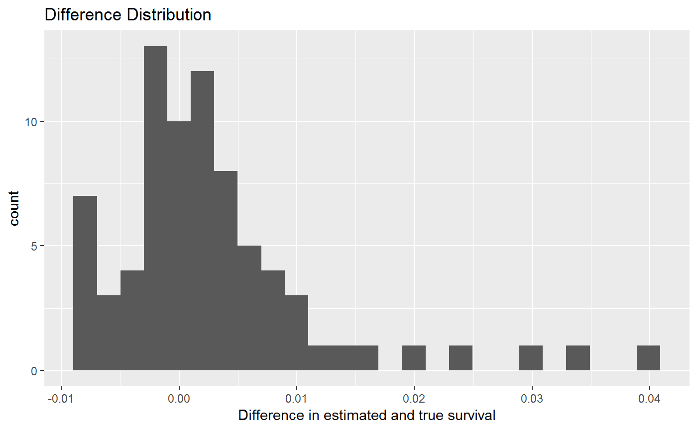

sm_predict
Daniel D. Sjoberg
2018-12-26
sm_predict.RmdIntroduction
The sm_predict() function calculates kernel-smoothed predictions from regression models (i.e. outputs from the predict() function). The following examples focus on time-to-event endpoints. The example data set is simulated from a Cox regression model.
\[ h(t) = h_0(t)e^{\textbf{X}\beta} \]
with \(h_0(t) = 1\) and \(\textbf{X}\beta = 0.02 * age - 0.2 * marker\). The independent variables age and marker are independent from one another. The example data set containts the following columns:
time Years from cancer treatment to death
age Age at treatment
marker Marker level at treatment
survt1 True 1 year survival probabilitylibrary(sjosmooth)
library(dplyr)
# loading data from sjosmooth github page
load(url("https://github.com/ddsjoberg/sjosmooth/blob/master/examples/cancertx.rda?raw=true"))
cancertx %>% select(time, age, marker, survt1) %>% head() %>% knitr::kable()| time | age | marker | survt1 |
|---|---|---|---|
| 4.396865 | 12.79050 | 10.052925 | 0.8411829 |
| 1.761713 | 32.70496 | 8.164047 | 0.6867428 |
| 4.401422 | 23.16842 | 8.725925 | 0.7576508 |
| 1.027328 | 30.00945 | 12.923154 | 0.8715716 |
| 1.979813 | 31.51574 | 9.909102 | 0.7719386 |
| 2.009533 | 38.03416 | 7.372298 | 0.6127544 |
The simualted data contains 10,000 observations.
Example 1 - Univariate
Kernel smoothing can be computationally intense on large data sets. The following code was run to get the example object sm_regression_ex1 and the results saved to GitHub.
library(survival)
library(sjosmooth)
sm_predict_ex1 =
sm_predict(
data = cancertx,
method = "coxph",
formula = Surv(time) ~ marker,
newdata = dplyr::data_frame(marker = seq(5, 15, 0.5), time = 1),
type = "survival",
verbose = TRUE
)The data in the cancertx data frame was simulated from a Cox regression model with linear predictor.
\[ \textbf{X}\beta = 0.02 * age - 0.2 * marker \]
In the model age and marker level are independent, and therefore, the univariate model the slope coefficient for marker remains \(\beta_{marker} = -0.2\)
library(ggplot2)
# loading data and example results from sjosmooth github page
load(url("https://github.com/ddsjoberg/sjosmooth/blob/master/examples/sm_predict_ex1.rda?raw=true"))
ggplot(sm_predict_ex1, aes(x = marker, y = .fitted)) +
geom_line() +
geom_ribbon(aes(ymin = .fitted.ll, ymax = .fitted.ul), alpha = 0.3) +
geom_line(
data = cancertx %>% filter(marker >= 5 & marker <= 15),
aes(x = marker, y = survt1_marker),
linetype = "dashed"
) +
labs(
y = "1 year survival probability"
)
The dashed line is the true one year survival, and the solid line is the estimated survival from sm_predict().
Example 2 - Multivariable
In this example, the 1 year survival will be estimated by both age and marker level. The following code was run in advance, and the results saved to GitHub.
sm_predict_ex2 <-
sjosmooth::sm_predict(
data = cancertx,
method = "coxph",
formula = Surv(time) ~ marker + age,
newdata =
list(
marker = seq(7, 13, 1),
age = seq(20, 40, 2)
) %>%
purrr::cross_df() %>%
dplyr::mutate(time = 1),
type = "survival",
verbose = TRUE
)# loading example results
load(url("https://github.com/ddsjoberg/sjosmooth/blob/master/examples/sm_predict_ex2.rda?raw=true"))
# adding true risk to dataset, and calculating difference between estiamted and true rate
sm_predict_ex2 =
sm_predict_ex2 %>%
mutate(
survt1 = exp(-exp((1/50) * age - 0.2 * marker)),
surv_diff = survt1 - .fitted
)
# plot histogram of differences between fitted and true
sm_predict_ex2 %>%
ggplot(aes(x = surv_diff)) +
geom_histogram(bins = 25) +
labs(
title = "Difference Distribution",
x = "Difference in estimated and true survival"
)
The code below will create a 3-D surface plot. The resulting HTML-widgets figures are too large to include in the package, however.
# library(plotly)
# # extracting unique values of independent variables
# age.seq =
# sm_predict_ex2 %>%
# select(age) %>%
# distinct() %>%
# arrange(age) %>%
# pull()
#
# marker.seq =
# sm_predict_ex2 %>%
# select(marker) %>%
# distinct() %>%
# arrange(marker) %>%
# pull()
#
# # Plotting the true survival probabilities
# sm_predict_ex2 %>%
# select(marker, age, survt1) %>%
# tidyr::spread(age, survt1) %>%
# select(-marker) %>%
# plot_ly(z = ~ as.matrix(.),
# x = marker.seq,
# y = age.seq) %>%
# add_surface(showscale=FALSE) %>%
# layout(
# title = "True Risk of Death within 1 Year",
# scene = list(
# xaxis = list(title = "Marker"),
# yaxis = list(title = "Age"),
# zaxis = list(title = "Survival Prob.")
# ))
#
# # Plotting the estimated survival probabilities from sm_predict()
# sm_predict_ex2 %>%
# select(marker, age, .fitted) %>%
# tidyr::spread(age, .fitted) %>%
# select(-marker) %>%
# plot_ly(z = ~ as.matrix(.),
# x = marker.seq,
# y = age.seq) %>%
# add_surface(showscale=FALSE) %>%
# layout(
# title = "Estimated Risk of Death within 1 Year",
# scene = list(
# xaxis = list(title = "Marker"),
# yaxis = list(title = "Age"),
# zaxis = list(title = "Survival Prob.")
# ))